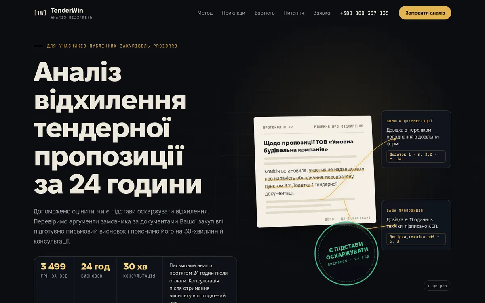
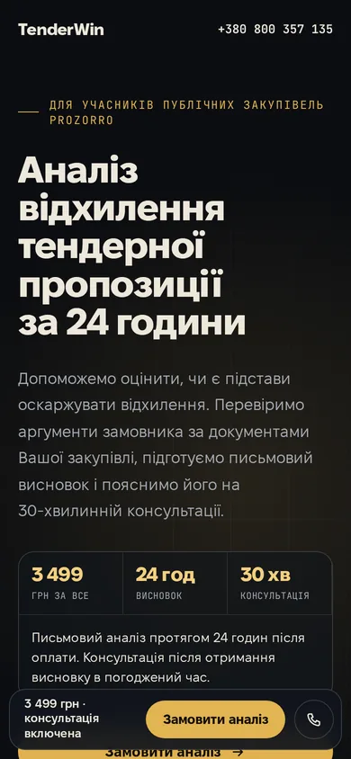
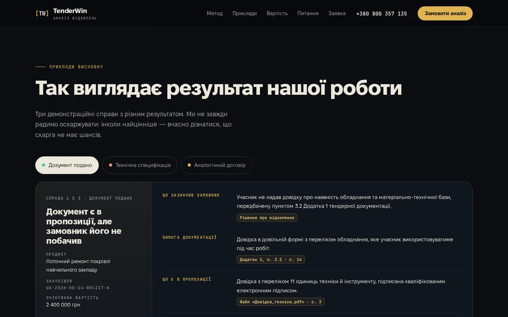

Приклади висновку: справа з індикатором сили позиції та шістьма рядками звіту.
1Темна · преміальна
Протокол
Перший екран показує саму роботу: рішення замовника, виділене спірне речення, золоті нитки до вимоги документації й до Вашої пропозиції, а потім печатка «Є підстави оскаржувати».
Враження
Строгість і доказовість, як у юридичній експертизі. Графіт і золото передають ціну правильного рішення.
Анімації
- документ розгортається в 3D, маркер виділяє підставу
- нитки-зв'язки малюються до посилань, ставиться печатка
- метод із закріпленою колонкою й великими цифрами 01–04
- рамка ціни обертається, напис у футері заповнюється золотом
Кольори й шрифти
#07090D#EDE7DA#E2B451#4CC594
Fixel (український шрифт MacPaw) і JetBrains Mono